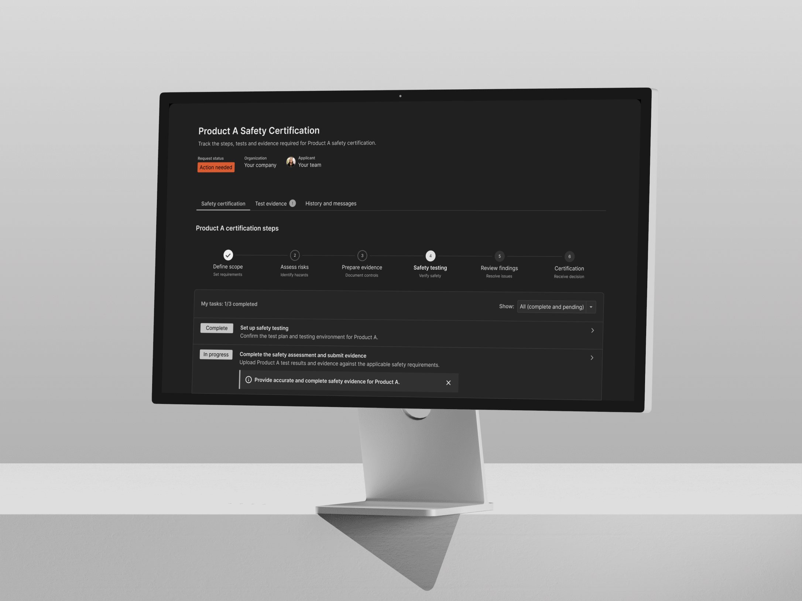
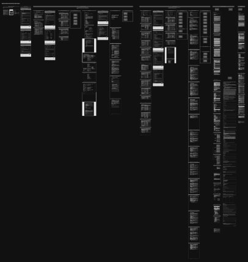
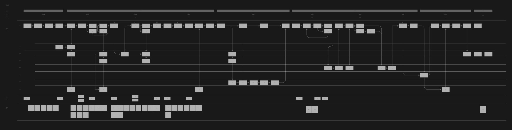
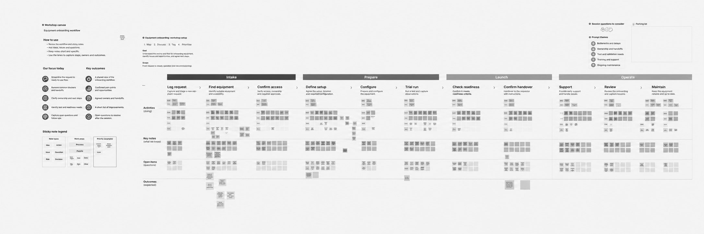
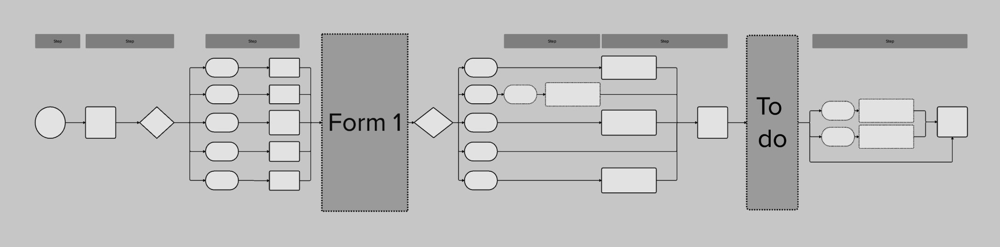
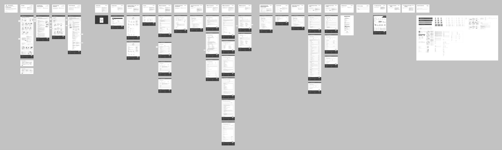

approval flow optimisation for Government/health
The problem
Businesses go through a complex certification, testing and approval process to access government services. It spans multiple applications, departments and third-party organisations: testing, evidence submission, compliance validation and secure resource provisioning.
The process can take up to 12 months, with many consultations with the support team. And because every type of business follows a different certification flow, users could not tell upfront how long it would take, which artefacts they’d need or which steps applied to them. An earlier ServiceNow implementation hadn’t improved any of this.
The solution
After 3 weeks of discovery workshops and 3 weeks validating future-state opportunities, we changed the process, not just the screens.
A simple custom portal: one page and one “initial assessment” form that moves every key decision point upfront, followed by a fixed “to-do list” of required actions. This made the journey transparent and easier to estimate. From there, ServiceNow takes over the tickets and processing.
As UX lead, working with one other designer and along the Business Analysis team, I ran the workshops and the discovery report, mapped the current and future state, and designed the front-end, its design system and a ServiceNow customisation.



Challenges: building after an unsuccessful ServiceNow implementation
Sometimes good digital experience is not possible without process change.
The first implementation digitised the paper forms as they were. One of them, covering just one phase of the process, was 56 pages long, and it became an equally heavy ServiceNow form. It also left triage and routing to the users: they still had to work out which steps applied to them, start each one and route it themselves. So we fixed the process first: a dedicated routing step, then one to-do list.
Challenges: engaging experts
Interviews with subject matter experts highlighted a common internal bias. One experienced support officer was able to navigate a 56-page, branching application form from memory, making the process appear efficient and intuitive from an internal perspective:
“...if you’ve filled A.2.1 two months ago, then it’s easy, just go to B.5.2 and skip B.5.1”
With about 15 stakeholders across interviews and workshops, the key was an open, comfortable space where people from every phase and swim lane of the approval flow could share their part, and often for the first time see the whole journey end to end. The current-state process and journey map we built together was sometimes eye-opening.



Stakeholder reviews
Daria has led the UX UI work stream […] They have exceeded client expectations. She collaborated well with the technical workstream. […] Daria has expertly led and facilitated workshops. I can’t fault her technical skills and solution design delivery.
Note: all UI designs are white-labelled and all images are regenerated.